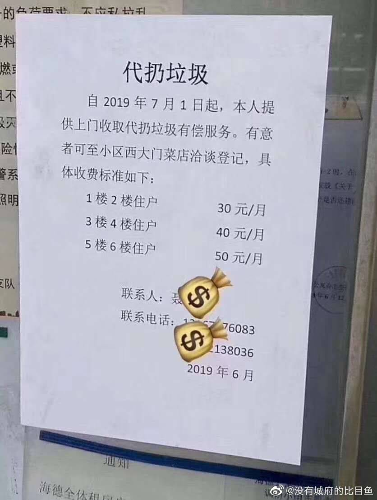

记得看日剧《四重奏》，因为天冷乐队几个人都不愿意去扔垃圾，阳台上垃圾袋快堆成山了。中国哪里能见到自己阳台堆垃圾袋的情景？都是宁愿堆到公共过道也不会放家里的，垃圾分类不但看公民自觉，早期也要强监管和约束。
@科学未来人:
#北京将推动垃圾分类立法# 整体来看，北京和上海的垃圾分类规定大处相同，都是四大类，比日本等各地不同、有的三大类有的二十四类相对“简单”多了。
⒈上海四大类是干垃圾、湿垃圾、可回收物、有害垃圾，四个颜色的桶。北京是餐厨垃圾、其他垃圾、可回收物、有害垃圾，也是四个颜色的桶。即使经常京沪出差的人来说，应该过段时间也容易搞清楚。不然的话，两地都有措施。上海七月一号实行当天，城管开出了623张整改单。
⒉发达国家垃圾分类一般分两种，可回收垃圾、不可回收垃圾。日本大体分三种：可燃垃圾、不可燃垃圾、资源垃圾。但是，日本是大类下面还要求小分类，如资源垃圾又分纸张、塑料、玻璃、金属等垃圾，居民早按照这些分类细分好。像熊本县水俣市的垃圾分类甚至达到24种，横滨市的垃圾分类手册长达27页。比起来，不管是北京还是上海垃圾分类就一张图，相对“方便”多了。
⒊两地垃圾分类相当考虑国情民意，没有严格规定扔垃圾时间。而日本垃圾回收的时间是固定的，错过了就要等下一次。特别是厨余垃圾，一周只有两次回收的时间，错过了就要等下一次，发臭也没办法。每年12月，各地市民会收到一份年历，每天的颜色不同，这些颜色分别代表不同垃圾的回收时间，
垃圾分类利国利民。要相信人类的适应能力是极强的，一个在小地方呆惯的人，去了北京、上海工作，自然而然就会学会遵守城市生活各项规定。更何况已经有代为垃圾分类的出现，每个月30块。坚持对的路，自然而然会帮我们找到解决、适应的办法。
→_→
⒈上海四大类是干垃圾、湿垃圾、可回收物、有害垃圾，四个颜色的桶。北京是餐厨垃圾、其他垃圾、可回收物、有害垃圾，也是四个颜色的桶。即使经常京沪出差的人来说，应该过段时间也容易搞清楚。不然的话，两地都有措施。上海七月一号实行当天，城管开出了623张整改单。
⒉发达国家垃圾分类一般分两种，可回收垃圾、不可回收垃圾。日本大体分三种：可燃垃圾、不可燃垃圾、资源垃圾。但是，日本是大类下面还要求小分类，如资源垃圾又分纸张、塑料、玻璃、金属等垃圾，居民早按照这些分类细分好。像熊本县水俣市的垃圾分类甚至达到24种，横滨市的垃圾分类手册长达27页。比起来，不管是北京还是上海垃圾分类就一张图，相对“方便”多了。
⒊两地垃圾分类相当考虑国情民意，没有严格规定扔垃圾时间。而日本垃圾回收的时间是固定的，错过了就要等下一次。特别是厨余垃圾，一周只有两次回收的时间，错过了就要等下一次，发臭也没办法。每年12月，各地市民会收到一份年历，每天的颜色不同，这些颜色分别代表不同垃圾的回收时间，
垃圾分类利国利民。要相信人类的适应能力是极强的，一个在小地方呆惯的人，去了北京、上海工作，自然而然就会学会遵守城市生活各项规定。更何况已经有代为垃圾分类的出现，每个月30块。坚持对的路，自然而然会帮我们找到解决、适应的办法。
→_→


- 